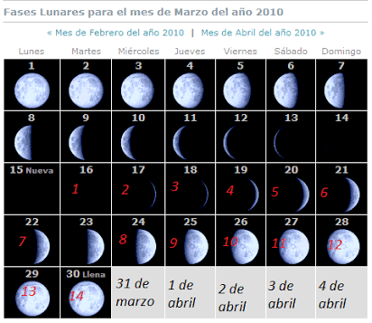

Semana Santa, conocida como semana mayor

es un período de 7 días que comienza con el Domingo de Ramos y culmina con el Domingo de Resurrección.
Con la Semana Santa, el cristiano conmemora el Triduo Pascual, es decir, los momentos de la Pasión, la Muerte y la Resurrección de Jesucristo.
En primer lugar debe hallar el equinocio vernal, o primer día de primavera ( alrededor del 21- 22 de marzo ), en un calendario que incluya datos astronómicos básicos. Después busque la siguiente luna llena, normalmente está indicada en una esquina del calendario. La Semana Santa caerá el domingo siguiente.
De acuerdo con esta regla, la fecha más tardía posible para Semana Santa sería el 25 de Abril, la próxima ocurrencia será en 2038. La más temprana el 22 de Marzo, en 2285. La mayoría de las veces, la Semana Santa cae durante la primera semana de Abril.
JUEVES SANTO
Jesus celebra la ultima cena con sus discipulos e instituyo la eucaristia
VIERNES SANTO
Jesus fue hecho prisionero, golpeado, condenado a muerte, obligado a cargar una cruz y a sercrucificado.
SABADO SANTO
Recordamos a la santisima virgen maria que sufrio mucho en este dia por que su hijo, que era inocente, habia muerto. Jesus esta en la sepultura. El sabado por la noche se celebra en la iglesia el rito del fuego nuevo y de la luz. Se bendice el fuego y el cirio pascual
DOMINGO DE PASCUA
Es el dia mas importante y mas feliz porque celebramos la resurreccion de jesus. Al resucitar,jesus nos salvo y nos abrio las puertas del cielo.
La palabra pascua significa "paso" y celebramos el paso de jesus de la muerte a la vida.
son imagenes religiosas plasmadas con aserrin pintado por los cuales pasan las procesiones
Un grupo de penitentes capaces de transpasar el humbral del dolor por su devocion, con un paso lento y quejumbroso, cientos de hombres semidesnudos y encadenados caminan en busca del perdon divino a traves del dolor.
Se acostumbra ir a balnearios para nadar, tambien muchas personas se mojan con el agua de su casa llenando globos de agua por ejemplo
El Domingo de Ramos es aquel en el que los cristianos conmemoran la entrada de Jesús de Nazaret en Jerusalén, aclamado por una multitud exultante, días antes de su pasión, muerte y resurrección, según testimonian los cuatro evangelios canónicos. Dicho domingo es el pórtico espiritual de la Semana Santa. La fecha de su celebración es movible, enmarcada en el lapso de los meses de marzo o abril.
Cuaresma es el tiempo que la iglesia dedica para preparar la pascua (tiempo en que celebramos la muerte y resurreccion de jesus).inicia con el dia de ceniza y termina con el domingo de resurrecion, el miercoles de ceniza te ponen en la frente un poco de ceniza como signo de cambio. la iglesia aconseja haver mas oracion hacer ayuno, cambiar el corazon, no comer carne de puerco y res miercoles y viernes.
para los cristianos la semana santa es un tiempo para recordar la muerte de cristpo, se congregan en una jornada de oracion y adoracion. en esta se citan a grupos artisticos y musicales ya que creen que "Dios habota en medio de la alabanza."
Para ellos la semana santa es la conmemoracion de la pasion de cristo; sin embargo los seis dis lo trabajan normalmente, ademas no tienen prohibicion para ingerir alimentos aunque tienden a ser vegetarianos.
Para los pentecostales inicia el jueves a las dos de la tarde con un desfile, en el cual reparten volantes, entonan canciones e invitan a toda la comunidad a congregarse en una reunion que tiene lugar en su centro de culto a las seis de latarda